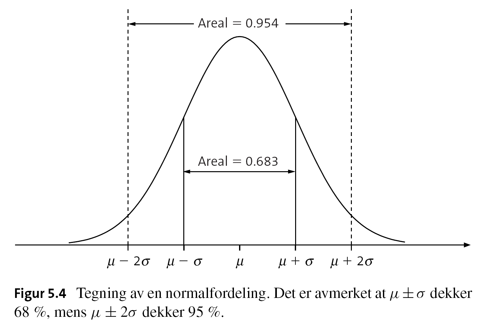
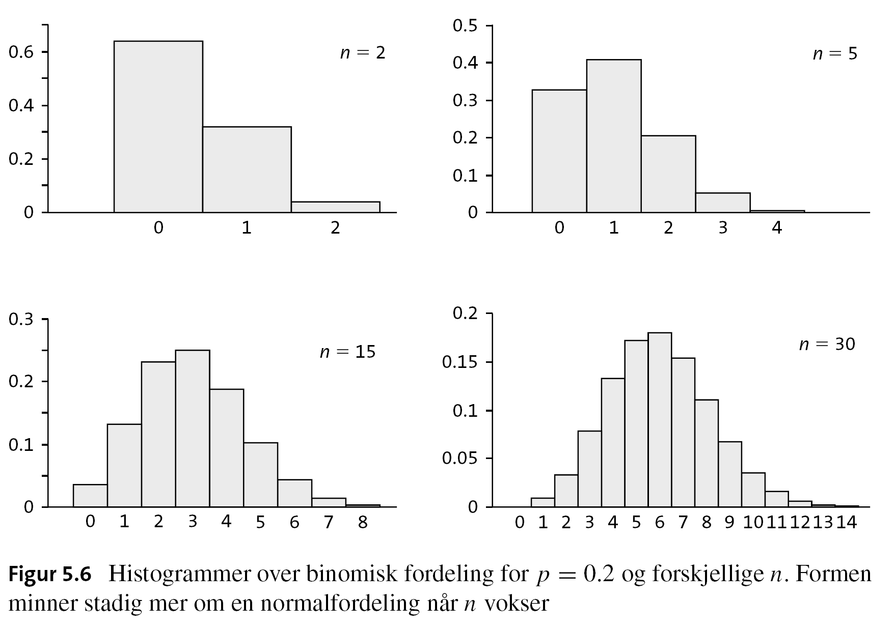
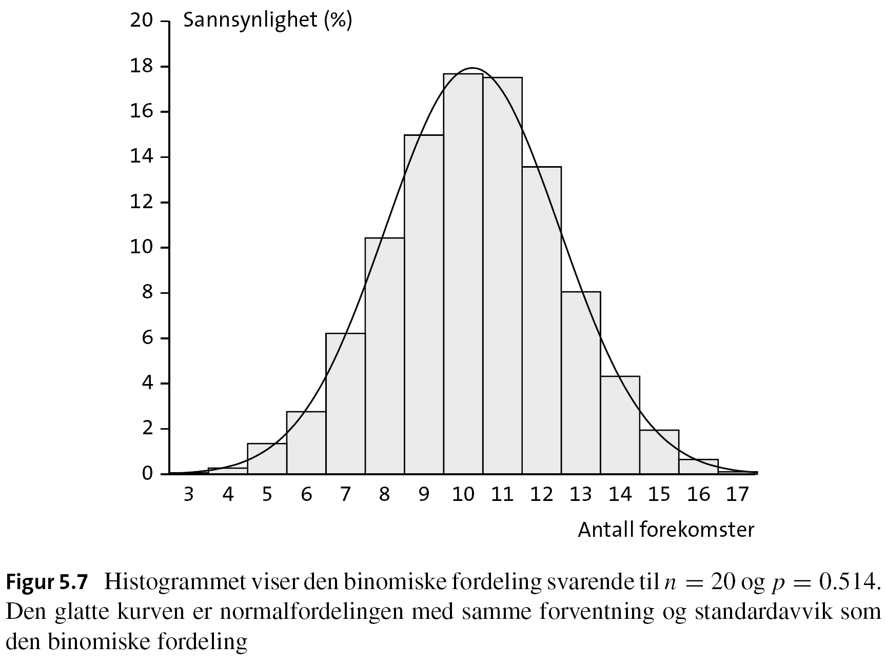

5 Normal distribution
Topics:
- Continuous probability distribution
- Normal distribution
- Normal approximation to binomial distribution
Books and resources:
- Aalen 5
- Kirkwood and Sterne 5, 6
5.1 Probability distribution revisited
Probability mass and density. Compare binomial and a continuous dist visually
Revisit the previous section on discrete variables
5.2 Normal distribution
Important distribution:
- application 1
- application 2
Probability density function
\[f(x) = \frac{1}{\sigma \sqrt{2\pi}} exp(- \frac{(x-\mu)^2}{2\sigma^2})\]
- \(\mu\) is the mean
- \(\sigma\) is the standard deviation
- \(exp(x) = e^{x}\)

5.2.1 Properties
- Symmetric, bell-shape
- \(\mu\) and \(\sigma\) define the location and variation
- From the center (mean), going two standard deviations each way covers approximately 95% of the distribution
Some other parameters
5.2.2 Standard normal distribution
A normal distribution \(N(\mu, \sigma)\) with \(\mu = 0, \sigma = 1\)
Any normal disribution can be transformed into a standard normal distribution \(N(0, 1)\): if \(X \sim N(\mu, \sigma)\), then
\[Y = \frac{X-\mu}{\sigma} \sim N(0, 1)\]
Standard normal distribution probabilities are commonly presented in tables, so people can check them easily.
birthweight, compute proportions
5.3 Normal approximation to the binomial distribution
Recall the binomial distribution,
\[P(X = x) = \binom nx p^x (1-p)^{n-x}\] where \(\binom nx = \frac{n!}{x!(n-x)!}\), and \(\binom n 0 = 1\)
For large \(n\), use the normal distribution.

5.3.1 Normal vs binomial
Fit a normal distribution to approximate a binomial distribution
- \(\mu = np\)
- \(\sigma = \sqrt{np(1-p)}\)
number of boys out of 20 new borns

5.3.2 Central limit theorem CLT
CLT in simple words: the distribution of sample mean will be nearly normal regardless of what distribution the variable in the population is, as long as the sample size is large enough.
Point out that the observed proportion of boys can be considered as a mean
and the rule of thumb
\[Binom(n, p) \rightarrow N(\mu, \sigma)\quad \text{for} \quad n \rightarrow \infty\]
if \(np \geq 5\) and \(n(1-p) \geq 5\)